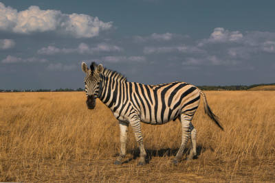

capivaras


algumas curiosidades sobre as zebras
- As listras de cada zebra são tão únicas quanto as impressões digitais humanas.
- As listras confundem predadores, dificultando a identificação de uma zebra no grupo.
- Zebras emitem vocalizações parecidas com latidos para alertar sobre perigos.
- Frequentemente convivem com gnus e antílopes, ajudando na detecção de predadores.
- Na Roma Antiga, eram chamadas de "cavalos tigres" e exibidas em arenas.
- As listras ajudam a regular a temperatura corporal em climas quentes.